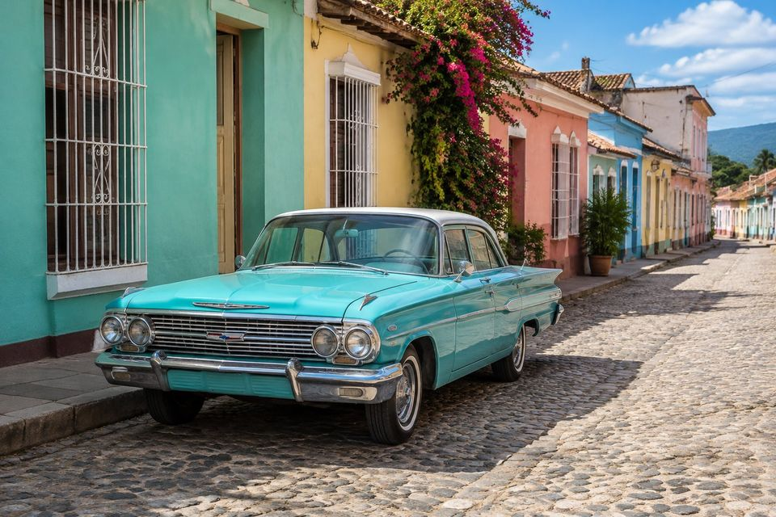
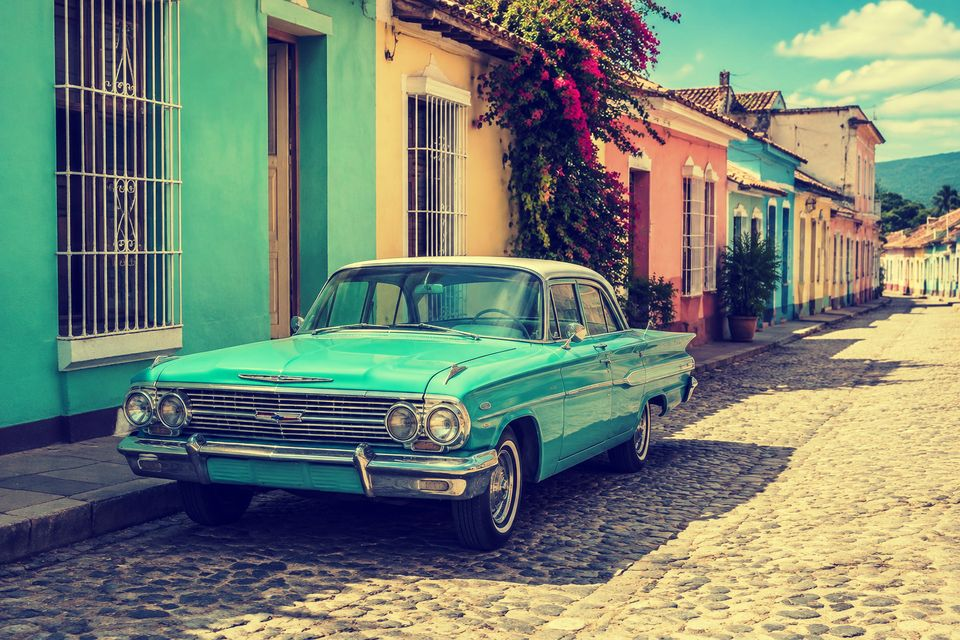
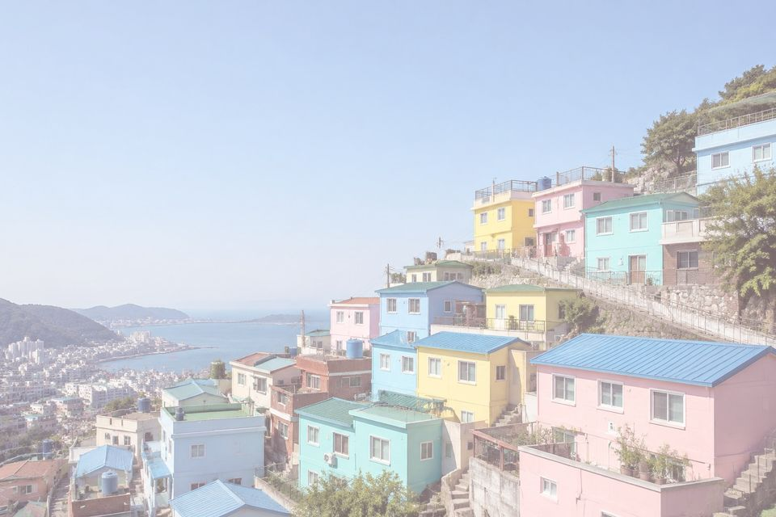
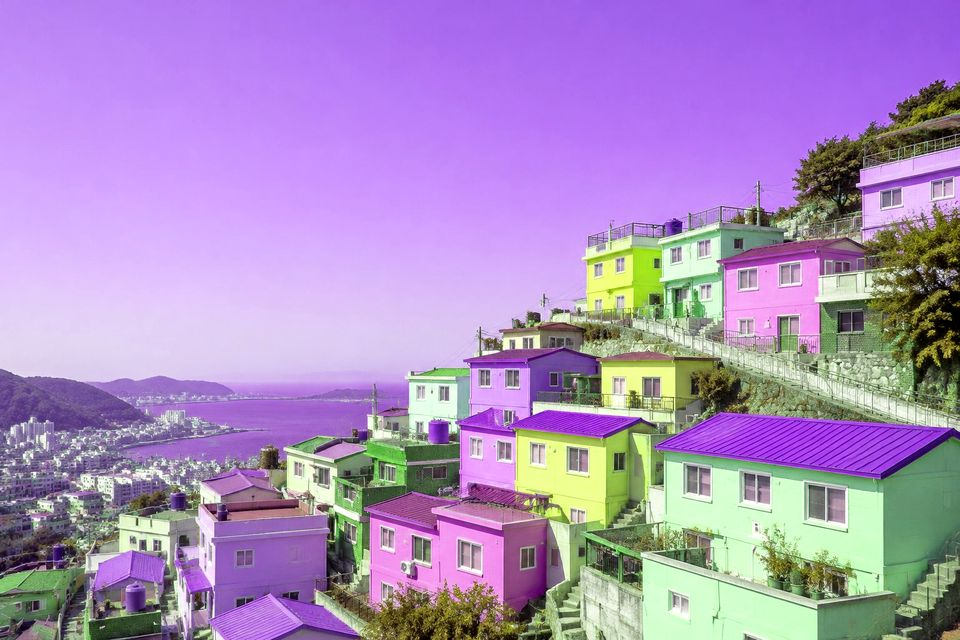

Image processing for Python
Photoshop-style blend modes and adjustments, in a few lines of Python.
Layer.is gives you all the common blend modes, brightness, contrast, hue, saturation and lightness controls, and per-channel curves — on top of NumPy, with a chainable API.
pip install layeris



image = LayerImage.from_file("photos/vintage-car.jpg")image = LayerImage.from_file("photos/vintage-car.jpg")
(image.curve("r", [0, 0.15, 0.55, 0.9, 1])
.curve("g", [0, 0.2, 0.55, 0.85, 1])
.curve("b", [0.22, 0.35, 0.48, 0.6, 0.72]))image = LayerImage.from_file("photos/vintage-car.jpg")
(image.lightness(0.18)
.saturation(-0.2)
.screen("#ffc4d6", opacity=0.35))image = LayerImage.from_file("photos/vintage-car.jpg")
pixels = image.get_image_as_array()
image = LayerImage.from_array(pixels[..., [1, 0, 2]].copy()) # swap R and G
image.contrast(1.1)Featured looks
Hover or focus a card to see the original photo. Every image is rendered by layeris from the snippet on the examples page.
Quick start
Load an image from a file, a URL or a NumPy array, chain operations, and save.
Every operation mutates the image in place and returns it, so a whole look reads
as one pipeline. Use clone() to branch off a copy.
Requires Python 3.10+. The only dependencies are NumPy, Pillow and Requests.
from layeris import LayerImage
image = LayerImage.from_file("photo.jpg")
(image.grayscale()
.brightness(0.1)
.multiply("#3fe28f", opacity=0.7)
.curve("rgb", [0, 0.1, 0.4, 0.65, 0.9, 1])
.save("result.jpg"))Documentation
Examples
24 complete looks — fixes, color grades, film, black & white and
creative effects — each with a before/after slider and copy-paste code.
Blend modes
All 14 blend modes side by side on three photos, plus how opacity
and the blend color change the result.
Operations
A before/after reference for every LayerImage method, from
grayscale() to pin_light().